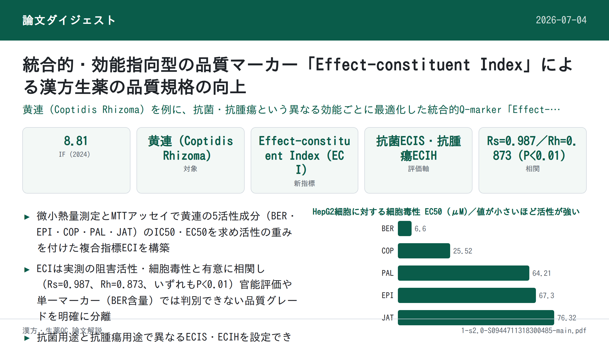
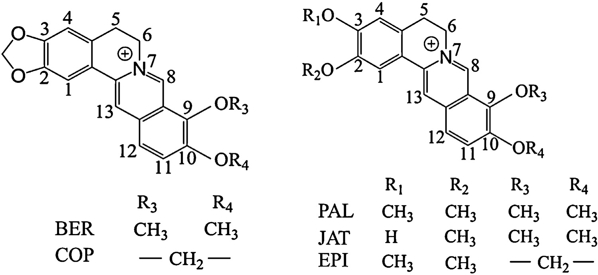
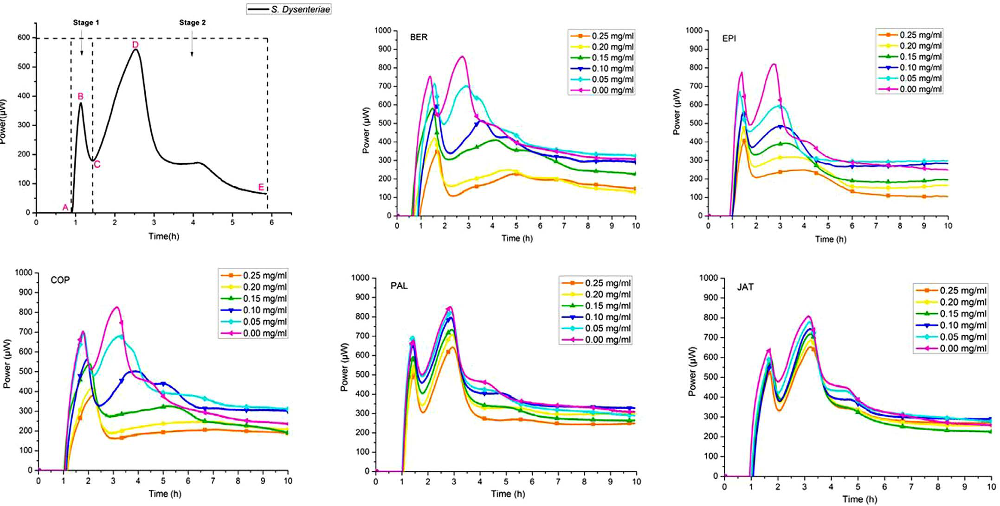
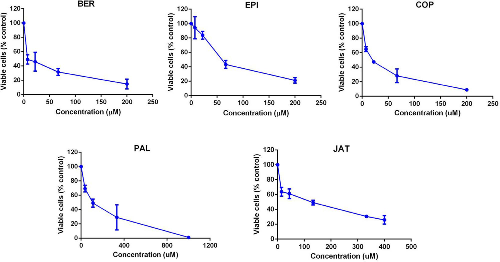
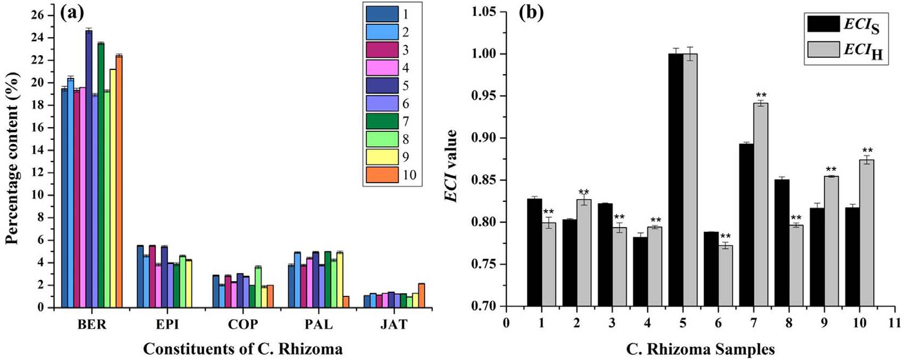
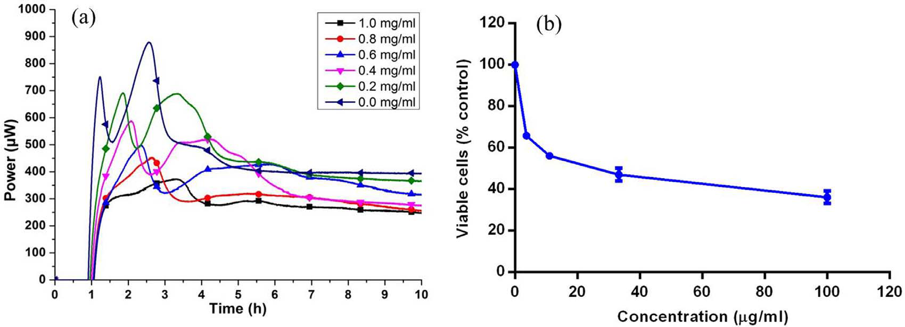
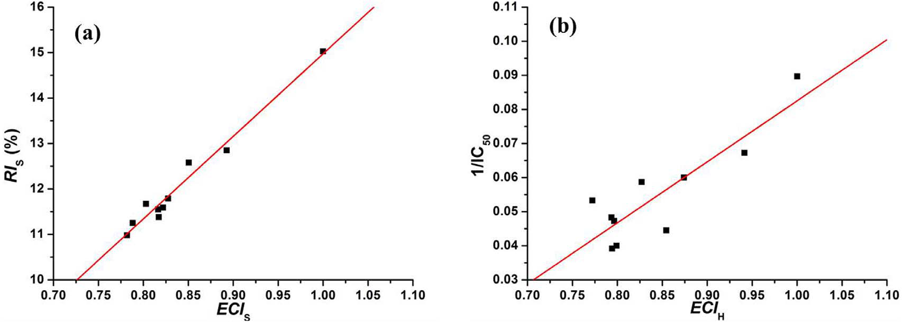
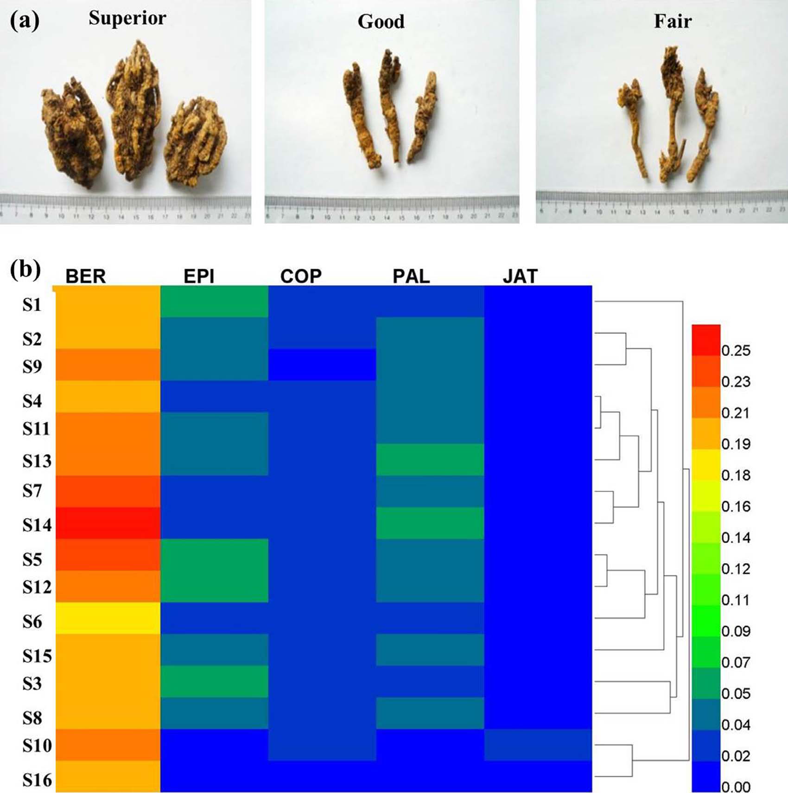
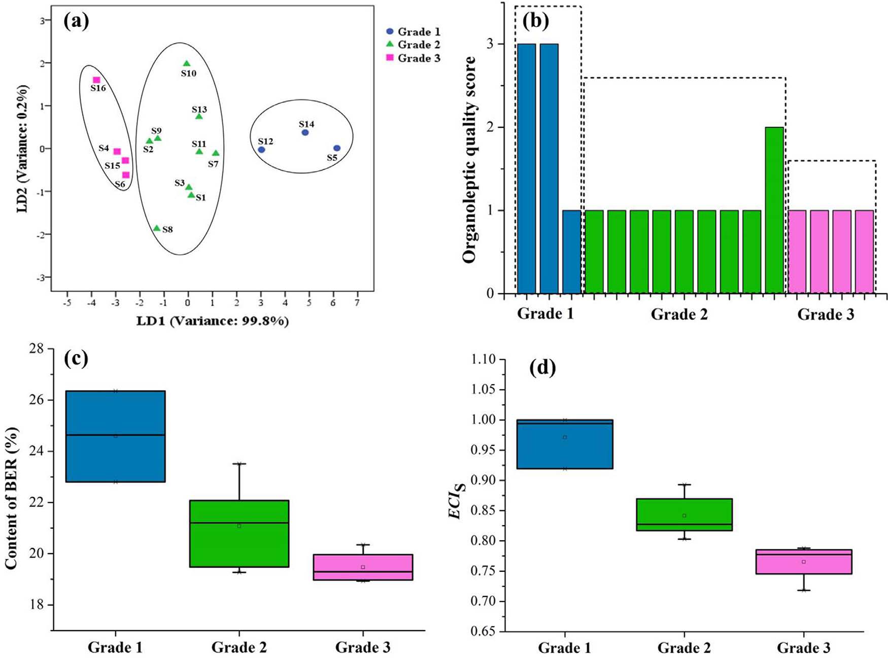
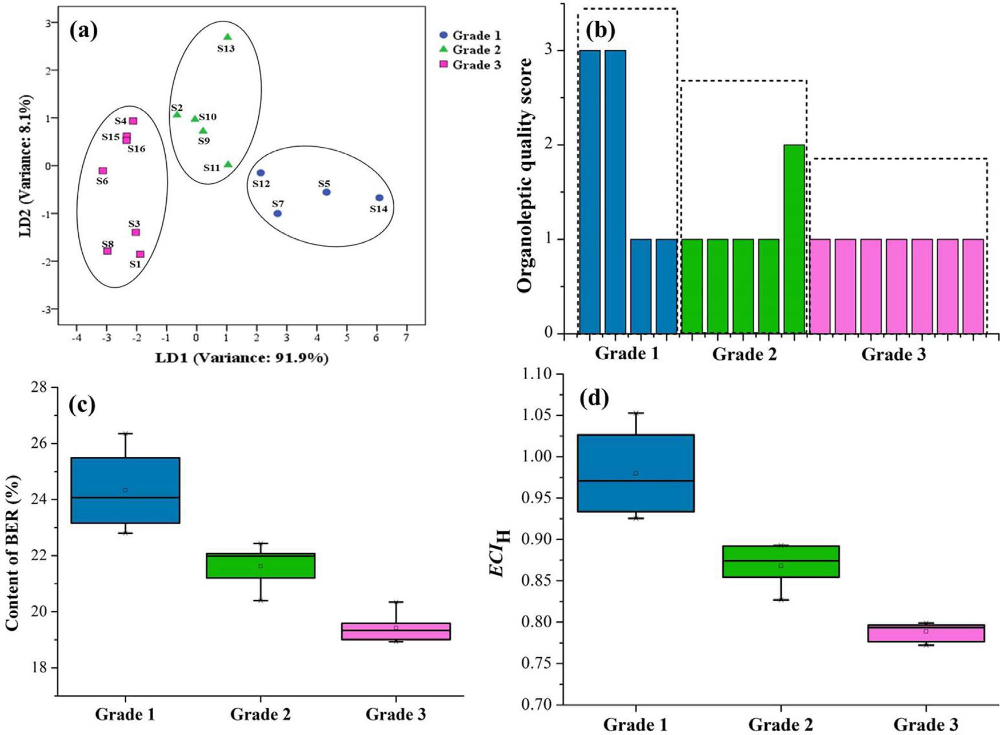

統合的・効能指向型の品質マーカー「Effect-constituent Index」による漢方生薬の品質規格の向上

<!-- 方針: ほぼ全訳＋必要に応じた補足。原文構成に沿って訳出。「> 補足:」は訳者注。 -->
補足: 本論文はレビューではなく、黄連（Coptidis Rhizoma）を事例とした原著研究（ケーススタディ）である。統合的・効能指向型のQ-marker概念であるEffect-constituent Index（ECI）を提案し、実測データで検証している。（本サイトの分類タグには運用上「レビュー」を含めているが、内容は実証研究であることに留意されたい。）
書誌情報
- 原題: Promotion of quality standard of Chinese herbal medicine by the integrated and efficacy-oriented quality marker of Effect-constituent Index
- 著者・所属: Yin Xiong（昆明理工大学 生命科学技術学院／北京中医薬大学 中薬学院）、Yupiao Hu・Fan Li・Lijuan Chen（昆明理工大学）、Qin Dong・Jiabo Wang（中国人民解放軍302医院 中国軍事医学科学院 中薬研究所）、Elizabeth A. Gullen・Yung-Chi Cheng（イェール大学医学部 薬理学科, 米国）、Xiaohe Xiao（同302医院, 責任著者）
- 掲載誌・巻号・DOI: Phytomedicine 45 (2018) 26–35. https://doi.org/10.1016/j.phymed.2018.03.013
- インパクトファクター: 8.81（Phytomedicine, JCR 2024 / Clarivate。2025年6月公表分。2023年版は6.7）
- 受理経過 / ライセンス: 受領 2017-07-23 / 改訂 2018-01-10 / 採録 2018-03-07。© 2018 Elsevier GmbH. All rights reserved.（キーワード: Coptidis Rhizoma; Quality marker; Effect-constituent Index; Shigella dysenteriae; HepG2 cells）
補足: 略語（原文Abbreviations欄より）: BER=berberine（ベルベリン）、CHMs=Chinese herbal medicines（漢方・生薬）、C. Rhizoma=Coptidis Rhizoma（黄連）、DMEM=Dulbecco Modified Eagle Medium、EPI=epiberberine（エピベルベリン）、HFP-t=heat flow power-time（熱流束-時間）、HPLC=high-performance liquid chromatography、JAT=jatrorrhizine（ジャトロリジン）、LDA=linear discriminant analysis（線形判別分析）、MSE=multi-indicator synthetic evaluation（多指標総合評価）、PAL=palmatine（パルマチン）、QC=quality control。COP=coptisine（コプチシン）も本文で用いられる。
要旨（Abstract）
Background（背景）: 現在、漢方・生薬（CHM）の品質管理には複数の成分がマーカーとして用いられている。しかし、それらの成分は互いに分離して扱われており、CHMの生物学的効果（bioeffect）に対する寄与の違いを示すことができていない。また、臨床用途の異なるCHMが同一の品質マーカー（Q-marker）で管理されることが多く、効能の違いを相関づけることができない。
Purpose（目的）: 本研究は、統合的かつ効能指向型のQ-markerであるEffect-constituent Index（ECI）により、CHMの品質規格を向上させることを目的とする。
Methods（方法）: 黄連（Coptidis Rhizoma、C. Rhizoma）を事例として、生物学的効果と活性成分の統合に基づくQ-markerのECIを開発した。C. Rhizomaの効能に応じて、微小熱量測定（microcalorimetry）とMTTアッセイによりそれぞれ抗菌作用・抗腫瘍作用を検討した。高速液体クロマトグラフィー（HPLC）によりC. Rhizoma抽出物の活性成分を同時に定量した。多指標総合評価法（multi-indicator synthetic evaluation, MSE）により、赤痢菌（Shigella dysenteriae, S. dysenteriae）増殖阻害に関するECIS、およびHepG2細胞に対するECIHを確立した。C. Rhizoma試料の感能評価（organoleptic evaluation）スコアはデルファイ法により付与した。
Results（結果）: 相関解析の結果、ECISおよびECIHは、それぞれC. Rhizoma抽出物によるS. dysenteriaeの増殖阻害効果（P<0.01）およびHepG2細胞増殖阻害効果（P<0.01）と有意に相関した。さらに、ECIはバイオエフェクトに基づく品質等級を良好に判別・予測できたのに対し、感能評価と化学分析ではこれを達成できなかった。加えて、ECISが低い一部の試料はECIHが高く、その逆の例もみられた。
Conclusions（結論）: Q-markerであるECIは、複数の活性成分を含むC. Rhizomaの異なる薬理効果を関連づけるのに有用であり、CHMの品質規格を統合的・簡便・差別化された方法で向上させるのに資する。
1. 序論（Introduction）
CHMは、その品質が有効性・安全性を左右する重要な要素であることから、世界の研究コミュニティで大きな関心を集めている（Cheung, 2011）。臨床で用いられるCHMの治療効果は、一般にその品質を表す最良の指標とみなされている（Govindaraghavan and Sucher, 2015; Zhong et al., 2014）。数ある品質管理（QC）・評価法の中でも、化学分析は実施が容易であるため、CHMの真偽判定や品質評価、種の識別に現在広く適用されている（Zhang et al., 2014a, b）。しかし、CHMの品質管理のために決定される一部の成分は、その臨床効能と相関しないことが多い。例えば、アデノシンはプリンヌクレオシドとして自然界に広く存在し、中国薬典（Chinese Pharmacopoeia Commission, 2015）ではCordyceps（冬虫夏草）の品質管理マーカーとして定められているが、腎保護・止血・去痰といったCHMの機能との相関は乏しい。
近年、Liu et al.（2017）はCHMの品質評価・工程管理のための新しい概念であるQ-marker（品質マーカー）を提唱し、Q-markerとはCHMの薬理効果に関連する化学成分であると明確に定義した。この目的を達成するため、活性成分が未知または定量できないCHMの品質評価やQ-marker決定には、生物学的アッセイを用いることができる（U.S. Food and Drug Administration, 2015）。
薬理学的な実体（substance）が比較的明確なCHMについては、複数の活性成分をQ-markerとすることで、単一の活性成分よりも包括的にCHMの効能・効果を反映できる。しかしながら、複数成分がCHMの薬理効果に及ぼす寄与の程度の違いはこれまで考慮されてこなかった。どの活性成分が治療において主導的役割を果たすのかが不明確なのである。例えば中国薬典（Chinese Pharmacopoeia Commission, 2015）では、黄連（C. Rhizoma）の品質管理・評価のためにベルベリン（BER）、エピベルベリン（EPI）、コプチシン（COP）、パルマチン（PAL）の含量が決定される。もしあるC. Rhizoma試料が別の試料と比べてEPI含量が高くCOP含量が低い場合、これら両成分がともにQ-markerであるとき、どのように両試料の品質差を評価すればよいのか。さらに、CHMは一般に複数の効能のために用いられるため、ある効能を有するCHMが他の効能についても同じ役割を果たすとは限らない。
多指標総合評価（multi-indicator synthetic evaluation, MSE）は、対象の特徴に関連する複数の要因・指標の統計解析に基づいて対象を総合的に評価する手法であり、経済・生態・政治・医学など様々な分野で広く応用されてきた（Ma et al., 2014; Miao et al., 2015）。臨床効能を関連づけ、CHM中の活性成分の寄与の違いを扱うため、我々はMSEを応用し、化学分析と生物学的効果検出の結果を統合した新しい品質評価法であるEffect-constituent Index（ECI）を確立した。これは、各成分の相対活性に応じて効果の重みを付与した活性成分の含量決定により求めることができる。
C. Rhizomaは、Coptis chinensis Franch.、Coptis deltoidea C. Y. Cheng et Hsiao、またはCoptis teeta Wall.（キンポウゲ科）の乾燥根茎であり、細菌性下痢、便秘、嘔吐、癌腫、その他の感染性・炎症性疾患の治療に数千年にわたり用いられてきた広く使用される漢方生薬である（Qian et al., 2015; Ren et al., 2013）。これまで、形態学的・顕微鏡的特徴の調査（Yi et al., 2015）、化学成分やクロマトグラフィープロファイルの分析（Kong et al., 2009a）、生物学的アッセイ（Qin et al., 2012）など、単独あるいは組み合わせた様々な方法がC. Rhizomaの品質評価に適用されてきた。研究者らは、C. Rhizomaが多様な薬理学的性質を有することを示している。その様々な成分の中でも、プロトベルベリン型アルカロイドが良好な薬理効果を持つ主要な活性成分であることが示されている（Chen et al., 2012; Yi et al., 2013）。例えば、BERはC. Rhizomaの重要かつ活性の高い成分であり、腸管感染症の治療に有効と認められ、近年では癌治療にも応用が検討されている（Tang et al., 2009; Wang et al., 2015）。C. RhizomaのほかのEPI、COP、PAL、ジャトロリジン（jatrorrhizine, JAT）といった活性成分も、抗菌・抗腫瘍・弛緩作用などの薬理効果を有することが報告されている（Tan et al., 2016）。したがって、比較的明確な生物活性物質の基盤と臨床効能に関連する特異的な生物学的効果を有するCHMであるC. Rhizomaを本研究の対象とし、本手法がどのように機能するか、その性能を検討した。多様なニーズに応えるため、我々はC. Rhizomaの抗菌作用・抗腫瘍作用に基づき、赤痢菌（S. dysenteriae）増殖阻害（ECIS）およびHepG2細胞増殖阻害（ECIH）を対象とした統合的・効能指向型のQ-markerを確立し、異なるロットのC. Rhizomaの個別品質評価に応用することを試みた。
2. 理論（Theory）
補足: 原文の数式はPDFからのテキスト抽出時にレイアウトが崩れており（上付き・総和記号などが分離）、以下は本文中の説明文に基づき数式の構造を整理して示したものである（数値・変数名は原文に忠実）。
各成分の生物学的効果と、CHM中の成分含量のデータをすでに測定していると仮定する。CHMの予測されるバイオエフェクトと活性成分データとの関係を記述するモデルは、以下の式(1)で決定できる。
式(1): ECIj = Σ(Wi・Xi)_sample / Σ(Wi・Xi)_reference （i = 1, 2, …, n）
ここで、ECIjはCHMの予測バイオエフェクトj、Wiは成分iのバイオエフェクトに対する重み係数、XiはCHM中の成分iの含量である。一般に、活性が相対的に強く、成分含量が高いCHM試料が参照試料として選ばれる。したがって式(1)はECIの形式的な表現であり、CHM中の各活性成分の含量と効果を、対応するCHMのバイオエフェクトに結びつける数理モデルである。成分のバイオエフェクトに対する重み係数は相対値であるため、Wiは式(1)を解くために算出する必要がある。
式(2): Wi = Ai / Σ Ai （i = 1, 2, …, n）
式(2)において、Aiは成分iの測定された効果値を表す。ある成分の効果値の、全成分の効果値合計に対する割合が、その成分のバイオエフェクトに対する重み係数である。Wiの値が高いほど、その成分はCHMのバイオエフェクトと強い（予測的な）相関を持つことを意味する。
成分のバイオエフェクトに対する重み係数と、CHM中のその活性成分の含量を乗じることで、CHMの対応するバイオエフェクトに対するその成分の相対的な寄与が明らかになる。したがって、活性寄与が分配された活性成分の含量を決定することで、CHMの予測バイオエフェクトを得ることができる。
3. 材料と方法（Materials and Methods）
3.1 実験材料
C. Rhizoma試料は、中国の四川省・重慶市・湖北省・雲南省にあるGood Agricultural Practices（GAP）基地から入手し、研究者（Xiaohe Xiao、中国軍事医学科学院 中薬研究所〔302医院〕、北京）により同定された。基準標本（voucher specimen、番号20120023）は同研究室に保管されている。BERおよびPALの化学標準品は中国食品薬品検定研究院（北京）から購入した。EPI、COP、JATは成都Must Biotechnology（成都）から購入した。上記標準品の純度はいずれも98%以上であった。
3.2 C. Rhizoma抽出物の調製
C. Rhizoma抽出物は既報の方法（Yan et al., 2014）に従って調製した。
3.3 抗菌活性アッセイ
抗菌活性実験は既報の方法（Yan et al., 2014）に従って行った。試料にはC. Rhizoma抽出物および種々の濃度のアルカロイド溶液を用いた。
3.4 細胞培養
HepG2細胞は米国イェール大学医学部（New Haven, CT, USA）から入手した。細胞は10%ウシ胎児血清および0.1 mg/mLカナマイシンを含むDulbecco改変Eagle培地（DMEM）中、37℃、5% CO2の飽和加湿雰囲気下で培養した。良好な増殖状態にある細胞は、リン酸緩衝生理食塩水に溶解した2 g/Lパンクレアチンで消化・継代した。
3.5 MTTアッセイ
コンフルエントに達した細胞を2 g/Lパンクレアチン処理により浮遊させ、96ウェル組織培養プレート（5000細胞/ウェル、一部ウェルは空白のまま）に播種した。12時間後、培地を除去し、異なる抽出物またはアルカロイドを含む10%ウシ胎児血清添加DMEMを各ウェルに添加した一方、空白ウェルには同量のDMEMを添加した。72時間後、各ウェルにMTT試薬（培地中5 mg/mL）20 µLを添加した。4時間後、対応する上清を廃棄し細胞を再度洗浄した。色素はジメチルスルホキシド150 µLで抽出し、溶液を振とう機に置いて溶解させた。15分後、マイクロプレートリーダーにより490 nmで吸光度を記録した。アッセイは三連で実施した。
3.6 高速液体クロマトグラフィー（HPLC）分析
クロマトグラフィー分析はAgilent 1100シリーズHPLCシステム（Agilent Technologies, Santa Clara, USA）を用い、Kromasil 100-8 C18カラム（250 mm×4.6 mm、5 µm）（AkzoNobel, Sweden）で実施した。移動相はアセトニトリル（ラウリル硫酸ナトリウム3 g/L含有）（A）と超純水（リン酸二水素カリウム6.0 g/L、pH 6.0）（B）（66:34, v/v）から構成した。グラジエントモードは以下の通り: 0分, B 38%; 55分, B 38%; 65分, B 15%; 70分, B 0%。カラム温度は30℃に設定した。流速は1.0 mL/分に設定した。検出波長は345 nm、注入量は10 µLとした（Xiong, 2015）。
C. Rhizoma抽出物（50 mg）を塩酸-メタノール溶液（1:100, v/v）50 mLに溶解し、60℃で15分間水浴加熱した。20分間の超音波処理後、溶液を0.45 µmメンブレンフィルターでろ過してからHPLC分析に供した。混合標準溶液は、塩酸-メタノール（1:100, v/v）中に（mg/mLで）BER 0.43、EPI 0.11、COP 0.06、PAL 0.12、JAT 0.07を含有した。5成分の化学構造をFig. 1に示し、C. Rhizoma抽出物のHPLCフィンガープリントはFig. S1（補足資料）に示した。

3.7 デルファイ法による官能評価
評価法は既報の研究（Wang et al., 2010a, b）に基づき開発した。質問票は、『中薬材76種の規格・等級標準』（中国国家中医薬管理局, 1984）を参照して作成した。官能評価の平均経験年数31年を有する13名の専門家を招き、2回にわたりC. Rhizomaの品質評価を行った。C. Rhizomaに関する熟知度と評価基準についての質問票（Table S1）を作成し、13名の専門性を調査した。C. Rhizomaに十分に精通し、実務経験に基づく評価基準を持つ専門家は、強い権威を有すると見なされた。2回の評価における専門家の一致度、および専門家間での試料等級評価の一致度は、それぞれ式(S1)・式(S2)により算出した。経験年数が相対的に少なく、権威が弱く、2回の評価の一致度が70%以下であった4名の専門家（Table S2）は最終結果から除外した。残る9名の専門家の間で最も高い合意が得られたスコアを、各ロットの識別結果として決定した。官能評価スコア3、2、1は、それぞれC. Rhizomaの「優（superior）」「良（good）」「可（fair）」の品質を表す。
3.8 統計解析
定量的な熱力学的パラメータは、Origin 8.5ソフトウェア（OriginLab Company, Northampton, USA）を用いて解析し、HFP-t曲線を描画するとともに熱力学的パラメータを算出した。IC50・EC50値はOrigin 8.5ソフトウェアを用いたプロビット回帰によりフィッティングした。主成分分析（PCA）、線形判別分析（LDA）、およびECI値と測定バイオエフェクト値との間の相関解析は、SPSS v20.0（IBM, Armonk, NY, USA）を用いて行った。結果は平均値±標準偏差で示し、すべての統計学的比較は一元配置分散分析（one-way ANOVA）とそれに続くDuncan検定により行った。P<0.05を有意とみなした。
4. 結果と考察（Results and Discussion）
4.1 抗菌活性
C. Rhizomaは、臨床において赤痢性下痢（dysenteric diarrhea）の治療に長い歴史をもって用いられてきた（Fukutake et al., 1998; Li et al., 2013）。数ある病原体の中でも、S. dysenteriaeは頻回の粘血便・腹部痙攣・しぶり腹（tenesmus）を伴う急性赤痢性下痢を誘発する主要な細菌性病原体として報告されている（Kamgang et al., 2005; Periska et al., 2003）。したがって、S. dysenteriaeに対する阻害はこの疾患を治療する有効な方法であり、C. Rhizomaの効能評価にも適したモデルである。
生きた生物の増殖・代謝の過程では熱・エネルギー産生が生じ、その変化は薬物の活性を評価する指標として利用できる（Furustrand Tafin et al., 2012; Yan et al., 2009）。微小熱量測定（microcalorimetry）は、種々の試料中の細菌活性・増殖をモニタリングする多用途かつ定量的な分析技術であり、様々な微生物に対する薬物の薬理学的効果の解析に広く用いられてきた（Kong et al., 2009b; Wu et al., 2005）。そこで、C. Rhizomaおよびその成分の抗菌活性を微小熱量測定により測定した。
37℃におけるS. dysenteriaeの正常な増殖発熱曲線をFig. 2に示す。熱流束-時間（heat flow power-time, HFP-t）曲線は、S. dysenteriaeの代謝プロファイルが2つの主要な段階（stage 1・2）と5つの相からなることを示した（誘導期[A-B]、第1指数増殖期[B-C]、移行期[C-D]、第2指数増殖期[D-E]、減衰期[E-F]）。S. dysenteriae増殖のHFP-t曲線の定量的熱力学的パラメータは、次式(3)により記述できる。
式(3): ln Pt = ln P0 + kt （P0・Pt: それぞれ時刻0・時刻t（分）における熱流束）
微小熱量測定の信頼性を検証するため、無処理の細菌について8回実験を繰り返し、良好な再現性を得た。次に、種々の濃度の試料存在下でのHFP-t曲線から、以下の熱力学的パラメータを定量した（Yan et al., 2014）: 第1・第2指数増殖期の増殖速度定数（k1・k2）、第1・第2最高ピークのHFP（p1・p2）、第1・第2最高ピークの出現時刻（t1・t2）、およびピーク下面積（S. dysenteriaeの総発熱量、Qt）（Table S3）（Kong et al., 2010; Kong et al., 2011）。PCAにより、t2とQtが最大の負荷量（loading）を持つ変数であることが明らかとなった。対照群と比較して、t2値が大きく、Qt値が小さいほど、S. dysenteriaeに対する阻害が強いことを示す。Fig. 2に示す通り、試料濃度の増加に伴いHFP-t曲線のt2は遅延しており、これは成分の抗菌活性を評価する指標となり得る。

次に、式(4)により阻害率ISを算出し、各成分の静菌活性を定量するためIC50値を求めた。
式(4): IS = (t2 − t0)/t0 × 100% （t0: 培地単独でのS. dysenteriaeのHFP-t曲線における第2最高ピークの出現時刻。t2: 被験試料に曝露したS. dysenteriaeのHFP-t曲線における第2最高ピークの出現時刻。IS: 試料のS. dysenteriaeに対する阻害率）
結果、BER・EPI・COP・PAL・JATのIC50値は（mg/mLで）それぞれ0.166、0.485、0.101、31.981、5.049であった。これは阻害活性の順序がCOP＞BER＞EPI＞JAT＞PALであることを示し、BERの優位な効果を過大評価し他成分の寄与を見落としてはならないことを想起させる。
4.2 MTTアッセイ
中医学の理論によれば、熱の蓄積から生じる毒（toxin）は腫瘍・癌を誘発する主要な病因の一つである。したがって、清熱解毒（heat-clearing and detoxicating）の治療法はこのような疾患の予防・治療に有効である（He et al., 2012; Lee et al., 2014）。清熱解毒作用を持つ代表的な生薬として、C. Rhizomaおよびその化合物は腫瘍・癌の予防・治療、あるいは癌治療中の副作用軽減に用いられてきた（Iizuka et al., 2000; Tang et al., 2009）。その治療に関連する機序は、腫瘍細胞の増殖および癌を誘発する関連遺伝子・転写因子の発現の直接的な阻害と相関する（Kim et al., 2004）。C. Rhizomaおよびその成分は、肝癌、子宮頸癌、鼻咽頭癌、肺癌などに対して強い抗腫瘍効果を有することが報告されており、その中でも肝癌治療における活性・機序に関する報告が多い（Tang et al., 2009; Wang et al., 2010b; Zhu et al., 2011）。そこで、我々は古典的な肝癌モデルであるHepG2細胞を用いてC. Rhizomaの効能を検討した。
成分の生存細胞率（%対照）は式(5)により算出した。
式(5): 生存細胞率（%対照） = (Asample − Ablank)/(Acontrol − Ablank) × 100% （A: 溶液の吸光度）
BER・EPI・COP・PAL・JATの種々濃度によるHepG2細胞に対する細胞毒性をFig. 3に示す。C. Rhizoma中のアルカロイドの生存細胞数と濃度の間には負の相関がみられた。BER・EPI・COP・PAL・JATのEC50値は（μMで）それぞれ6.60、67.30、25.52、64.21、76.32であり、BERが最も強い細胞毒性を示し、JATが最も弱い効果を示した。S. dysenteriaeの増殖に対するC. Rhizomaアルカロイドの効果と比較すると、COPが最も強い細胞毒性を示したのに対し、PALは最も弱い効果を示した。

以上の結果から、5成分は同一の生物学的効果を引き起こすうえで有意に異なる程度の寄与をしていることが分かる。例えば、S. dysenteriaeに対する阻害のIC50値でみると、BERの抗菌活性はPALの約200倍強かった。非マーカー成分であるJATも、PALより強い阻害効果を示した。これらの知見は、複数成分をQ-markerとする場合、成分ごとの相対活性の寄与を考慮すべきであることを示している。また、S. dysenteriaeに対する阻害の順序はCOP＞BER＞EPI＞JAT＞PALであったのに対し、MTTアッセイではBER・EPI・COP・PALの4成分がJATより相対的に強い効果を示した。これらの知見は、C. RhizomaのQ-markerは臨床で適用される異なる効能に応じて方向づけられるべきであることを示唆する。例えるなら、定規は長さを測るための道具であって、重さを量ることはできない。
4.3 ECIS・ECIHの確立
効果の重みは、式(6)または(7)によりIC50iまたはEC50iの逆数を正規化することで各成分に割り当てた。
式(6): Wi = (1/IC50i) / Σ(1/IC50i)（i = 1, …, n） 式(7): Wi = (1/EC50i) / Σ(1/EC50i)（i = 1, …, n）
Wiは各成分のバイオエフェクトに対する重み係数を指す。IC50i・EC50iは成分iのIC50・EC50、nは成分数である。本研究では、成分はBER・EPI・COP・PAL・JATである。活性が相対的に強く、成分含量が高いC. Rhizomaを参照試料とする。本研究では試料5が参照試料に決定された。各成分のIC50・EC50値を上記の式に代入することで、C. Rhizomaの抗菌活性・抗腫瘍活性のECIモデルはそれぞれ式(8)・(9)のように得られた。
式(8): ECIS = 3.1676×XBER + 1.0842×XEPI + 5.2062×XCOP + 0.0164×XPAL + 0.1041×XJAT 式(9): ECIH = 3.7617×XBER + 0.3689×XEPI + 0.9729×XCOP + 0.3867×XPAL + 0.3253×XJAT
上式において、ECIS・ECIHはそれぞれS. dysenteriaeに対する予測阻害効果、HepG2細胞に対する予測細胞毒性を表す。XBER・XEPI・XCOP・XPAL・XJATは、C. Rhizoma中のBER・EPI・COP・PAL・JATの含量である。重み係数によれば、COPは他成分よりも強い阻害効果を示す一方、細胞毒性についてはBERが相対的に強かった。
4.4 アルカロイド含量、ECIS・ECIHの決定
Fig. 4aに示す通り、10ロットのC. Rhizoma抽出物における5成分の含量はロットごとに不均一であり、異なる試料の品質評価を困難にしている。例えば、試料1のEPI・COP含量は試料2より高い一方、試料1のBER・PAL・JAT含量は試料2より低かった。5指標の含量を同時に検討して、どちらの試料が品質面で優れるかを判断するのは困難であった。
この問題を解決するため、各ロットのC. RhizomaのBER・EPI・COP・PAL・JATの含量を式(8)・(9)に代入し、異なる試料のECIS・ECIHを算出した。Fig. 4bに示す結果によれば、ECIの個別指標により、ロットごとのC. Rhizomaの品質差を容易に判別できた。例えば、試料4はECISの点で劣っていた一方、試料5はECISの点で優れており、これはS. dysenteriaeに由来する赤痢の治療に用いる場合の評価である。同時に、ECIの確立により、C. Rhizomaの個別化評価と合理的使用も導くことができる。例えば、試料7はそのECI値によれば、S. dysenteriaeの阻害よりもHepG2細胞の阻害においてより優れていた。

4.5 相関解析
ECIがC. Rhizomaの効果を代表しうるか確認するため、C. Rhizoma抽出物によるS. dysenteriae増殖阻害（Fig. 5a）とHepG2細胞に対する細胞毒性（Fig. 5b）を、それぞれ微小熱量測定とMTTアッセイにより検討した。C. Rhizoma抽出物の濃度が高いほど、阻害効果は強かった（Fig. 5）。式(10)によりS. dysenteriaeに対する相対阻害率（relative inhibition rate, RI）と、種々のロットのC. RhizomaのHepG2細胞に対するEC50値を決定した。
式(10): RIS = IS/Icontrol × 100% （RIS: C. Rhizoma試料のS. dysenteriaeに対する相対阻害率。IS: C. Rhizoma試料の阻害率。Icontrol: 陽性対照薬BERの阻害率）

測定した効果値とECIの予測値を比較したところ、最も高いECIS・ECIHを示した試料5は、S. dysenteriaeに対する阻害・HepG2細胞に対する細胞毒性においても最も強い（それぞれRIS 15.03%、EC50 11.14 mg/mL）ことが分かった。さらに、ECIと阻害効果の値との相関解析を行った。結果（Fig. 6）によれば、C. RhizomaのECISはRISと有意に相関し（RS = 0.987、P<0.01）（Fig. 6a）、C. RhizomaのECIHは1/EC50と有意に相関しており（RH = 0.873、P<0.01）（Fig. 6b）、ECIS・ECIHがそれぞれS. dysenteriaeおよびHepG2細胞に対するC. Rhizomaの阻害効果をある程度代表しうることが示唆された。

4.6 ECIと従来の品質評価法との比較
感能評価と化学分析は現在、CHMの識別・品質評価に適用されている。経験豊富な実務者は、色・匂い・味・質感を観察してCHMの品質を判別する。C. Rhizomaの品質評価に対するECIの実行可能性を検証するため、異なるロットの代表的な16試料を分析した（Table S4）。マーカー成分の含量、デルファイ法により決定した官能評価スコア（Table S4）、および上記モデルにより算出したECIS・ECIH値をFig. 7・8に示す。デルファイ法を用いた結果、C. Rhizoma試料5・14は形態面で優（superior）とみなされ官能評価スコア3、試料2は良（good）とみなされスコア2、残りの試料は可（fair）としてスコア1が付与された。3等級の典型的な試料をFig. 9aに示す。太い根茎・少ない支根・金黄色の破断面を持つC. Rhizomaは、形態面で上質（premium）とみなされた。さらに、5活性成分の含量に基づきクラスター解析を行いC. Rhizoma試料を分類した（Fig. 9b）。化学分析により、同一起源（Coptis teeta Wall.）のC. Rhizoma試料10・16は、Coptis chinensis Franch.を起源とする他試料と区別できたが、これらの指標は互いに独立しているため、どの試料がより優れた効果あるいはより高い活性成分含量を持つかを判断するのは困難であった。

C. Rhizoma試料の評価結果の精度をさらに検討するため、実際のバイオエフェクトの結果を基準として、これらの手法の一致性を比較した。異なる起源・産地の試料を分類するためLDAを実施した。抗菌効果およびHepG2細胞に対する細胞毒性に基づく散布図をそれぞれFig. 7a・8aに示す。図中にクラスターの重なりは見られなかった。抗菌活性については、異なるロットの試料は次のように3等級に分類された: グレード1（S5、S12、S14）、グレード2（S1–4、S7–11、S13）、グレード3（S4、S6、S15–16）（Fig. 7b）（原文ママ。S4がグレード2の範囲表記「S1–4」とグレード3の両方に現れており、原文の重複・誤記の可能性がある）。HepG2細胞に対する阻害効果については、C. Rhizoma試料は次のように分類された: グレード1（S5、S7、S12、S14）、グレード2（S2、S9–11、S13）、グレード3（S1、S3–4、S6、S8、S15–16）（Fig. 8b）。一部の試料はある効果で低値を示す一方、別の効果では高値を示した。結果によれば、官能評価スコアはバイオエフェクトに基づく品質等級を完全には判別できず、C. Rhizomaの外観が劣っていても必ずしも薬効が弱いとは限らないことが示唆された。また、C. Rhizomaのマーカー成分であるBERの含量は、抗菌効果に基づく品質等級を判別できなかった（Fig. 7c・8c）。対照的に、C. Rhizomaの3等級はいずれもECIS（Fig. 7d）およびECIH値（Fig. 8d）により有意に区別できた。


本研究は、形態学的特徴のみ、あるいは単一マーカー成分や複数の孤立したマーカー成分の含量のみを考慮しては、C. Rhizomaの品質を判断できないことを示している。それらの効果は統合された一部として扱われるべきである。生薬中の活性成分の含量決定と生物学的効果試験の重み付き解析に基づく手法として、Q-markerであるECIは、C. Rhizomaの品質と潜在的な臨床効果を関連づけるのに有用である。本研究では、C. Rhizomaの2つのバイオエフェクトのみを検討した。当該生薬の他の効能に関するさらなる試験、およびin vivoでの薬理学的検証は、今後の研究で実施される予定である。
5. 結論（Conclusion）
CHMの臨床用途に応じて統一されていない規格は、その品質を反映することを困難にすることが多く、マーカーを孤立して扱うことは、異なるQ-markerによって評価結果が矛盾することがあるため、実務での使用を妨げる。臨床効能に関連する化学的・生物学的情報の統合に基づき、Q-markerであるECIは、C. Rhizomaの効果ごとの用途に応じた個別評価を可能にし、両面から品質規格を向上させることができる。Q-markerのECIを用いれば、バイオエフェクト指標を追加することなく、活性成分の含量を検出するだけでC. Rhizomaの効果を決定できる。したがって、ECIはC. Rhizomaの従来法・近代的評価法を補完する有益な手法となり得る。本研究は、臨床効能に対応する比較的明確な効果と活性成分を持つ他のCHMの品質評価の基盤を築くものである。
利益相反
著者らは、本研究が利益相反とみなされうる商業的・財政的関係の存在しない状況で実施されたことを宣言する。
謝辞
著者らは、国家自然科学基金（81660661、81274026）、昆明理工大学（KKSY201526065）、雲南省応用基礎研究重点プロジェクト（2016FD040）に感謝する。Yin Xiongはまた、海外留学への財政支援について中国国家留学基金管理委員会（Chinese Scholarship Council）に感謝する。
補足: 本論文には補足資料（Supplementary materials；Table S1–S4、Fig. S1、式(S1)・(S2)を含む）があり、オンライン版（doi:10.1016/j.phymed.2018.03.013）で参照できる。本解説はDrive上のPDFから抽出できた本文テキストの範囲で全訳しており、補足資料そのものの内容（各専門家の個別評価データ等）は原文参照とする。
訳者補足（実務向けメモ）
以下は原文には無い、QC実務向けの整理（訳者注）。
- 単一マーカーの限界を示す好例。中国薬典が黄連の品質管理マーカーとするBERは、含量だけを見ても抗菌効果に基づく品質等級（グレード1〜3）を判別できなかった（Fig. 7c・8c）。マーカー成分の含量が高い＝薬効が高い、とは限らないことを定量的に示した点が実務上重要。
- ECIの考え方は「効果の重み付き含量合計」。各成分のIC50・EC50の逆数を正規化した重みWiを求め、成分含量Xiに掛けて合計する（式1・2・6・7）。数式自体は単純だが、前提として各成分のIC50・EC50を実測する必要があり、成分ごとに異なる生物学的アッセイ（本研究では微小熱量測定・MTT）を組む手間がかかる。
- 効能ごとに異なるQ-markerになりうるという点が本論文の核心。同じ黄連でも、抗菌用途ではCOPの寄与が最大（重み最大）、抗腫瘍用途ではBERの寄与が最大というように、効能軸によって「効く成分の配合」が変わる。複数の効能を持つ処方・生薬でQ-markerを1つに絞り込むことの危うさが具体的数値（IC50: COP 0.101 mg/mL vs. PAL 31.981 mg/mL、約300倍差）で示されている。
- 本研究はあくまでケーススタディ（黄連1種・2効能のみ）であり、著者ら自身が「他の効能・in vivo検証は今後の課題」と明記している。自社の生薬・処方にECIの考え方を応用する場合も、効能ごとのバイオマーカー実測とバリデーションが前提になる点に注意。
- Fig. 7bと8bのグレード分類（S4の重複表記など）に原文の記載揺れがみられた箇所は本文中に「原文ママ」として明記した。数値そのものは改変していない。